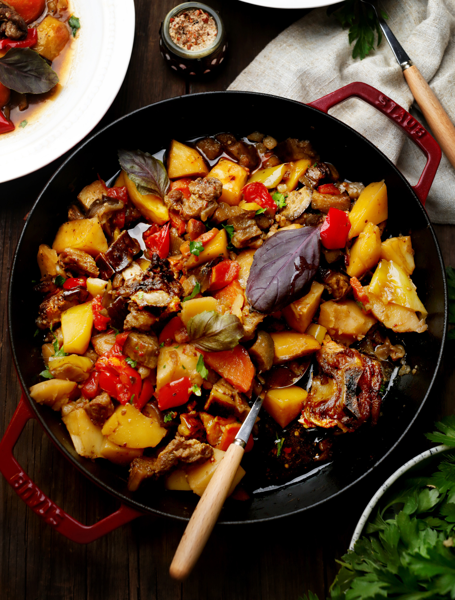

Аппетитное армянское рагу хашламу готовят как в казане, на огне или на плите, так и, имитируя условия печи, в духовке. Порционные куски баранины или говядины выкладывают поверх овощей и долго тушат под крышкой в собственном соку или часто с добавлением бульона, воды или пива. Лучше всего для хашламы подойдет мясо для тушения: отруб на кости или без. Попросите мясника нарубить его кусками по 100–150 граммов. Набор овощей для этого блюда можно варьировать по вкусу: кроме лука с морковкой, сладкого перца и баклажанов добавить картофель, стручки зеленой фасоли, капусту, сельдерей. Если блюдо готовится не на огне, для придания особого аромата хорошо к нему добавить щепотку копченной на ольхе соли или копченый острый перец. Для запекания половины порции можно использовать большой чугунный сотейник.